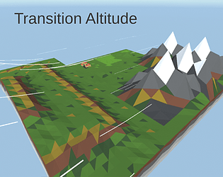

2020 - Pacman, C99
Just a Pacman clone. Made with SDL. All graphics and audio is by me.
First delve into pathfinding and making a finished product.
> Repo
| programming | videos |
|---|

2020 - Transition Altitude, FFS2020 Game Jam, Unity
It's one of these ideas that sound great in your head: strategic paragliding.
Managed to push it through for Finally Finish Something Game Jam. Game has around 10 levels, all by me in Unity.
I'm happy with the idea, less with the Level Design that was untested and ends up frustrating.
> Download
2020 - Pacman, C99
Just a Pacman clone. Made with SDL. All graphics and audio is by me.
First delve into pathfinding and making a finished product.
> Repo
2020 - Simple Lightweight 2D Game Engine, C++
A very WIP 2D engine, with a map editor and (in the future) an event editor.
Uses ECS, has an xml saveformat. Was a lockdown project. I need to revisit it.
> Repo
2020-2021 - Vulkan experimentations, C/C++
My first delve into 3D programming. Started as a playground for raytracing in 2020 until I rewrote it completely in C-Style C++ using a classic rasterizer. Delved a bit into pbr at some points.
Project on main branch can load a gltf, display it, and has volumetric lighting. Backup of previous states is kept in different branches. Probably the most effort I've put into something.
> Repo

2021 - Password Game, C-Style C++
A bit of a dumb idea I had one day of making a puzzle game about these pesky password requirements.
Made in a day. I still like the general idea but lack ideas to make it more interesting. I might update it at some point.
> Repo